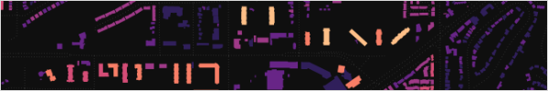

Toronto Figure-Ground Population Density Map
2017-06
An experiment to combine census population data with building geometries to produce a fine-grained population density map.
https://sausy-lab.github.io/figure-ground-pop-density-map/index.html
Data:
- 2016 Block Level Population Data - Statistics Canada
- 2016 Building Massing Data - City of Toronto
Tools:
- PostGIS for the spatial joins,
- QGIS for the map layout and styling,
- GDAL for generating raster web tiles,
- Leaflet for showing in browser,
The map isn't perfect. i.e. each building does not contain the correct living population. It was generated via an areal interpolation method based on volumetric ratios.
The process is explained as follows:
1 - Grab the building massing data and census block geometries with population counts and shp2pgsql them into a PostGIS database
2 - Compute fields for area (m2) and volume (m3) of each building by using the local UTM projection. Also compute the centroid for a future join.
CREATE TABLE buildings_w
SELECT
gid as gid,
height as height,
ST_AREA(ST_Transform(geom,32617)) * height As volume,
ST_Centroid(geom) as geom
FROM
buildings_in3 - Join the unique IDs of census blocks to each building.
CREATE TABLE
buildings_cb
AS
(
SELECT
buildings_w.gid as gid,
buildings_w.volume as volume,
buildings_w.geom as geom,
db_2016_tor.dbuid as dbuid,
db_2016_tor.pop as dbpop
FROM
building_centroids
LEFT JOIN db_2016_tor
ON ST_Intersects(buildings_w.geom, db_2016_tor.geom)
);4 - Window function to sum volumes by block ID.
CREATE TABLE
buildings_cb_g
AS
(
SELECT
volume as volume,
gid as gid,
dbuid as dbuid,
dbpop as dbpop,
sum(volume) OVER (PARTITION BY dbuid) AS total_volume
FROM
buildings_cb
);5 - Estimate the building population via the
ALTER TABLE
buildings_cb_g
ADD COLUMN
building_pop double precision;
UPDATE buildings_cb_g
SET building_pop = dbpop * volume / total_volume;6 - Join to the building footprint geometries and style in QGIS geometrically. These are the colours:
['#231151','#5e177f','#982c80','#d3426e','#f8765c','#febb80','#fcfdbf']7 - Export as a big dirty raster.tif 16384 x 16384 which is scale for web tiles.
8 - Turn that raster.tif into web tiles with GDAL
gdal_translate -of GTiff -a_ullr -180 90 180 -90 -a_srs EPSG:3857 test.tif map.tif
gdal2tiles.py -p raster -z 0-6 -w none map.tif9 - Create the web map, see index.html